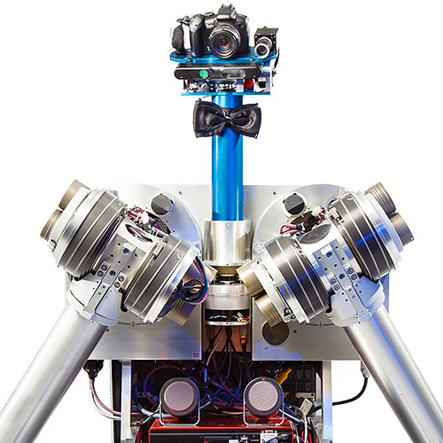
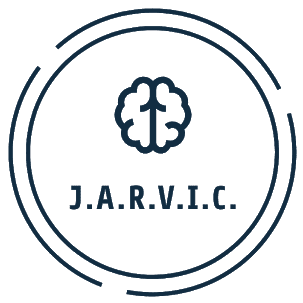

Adapting Multi Agent Pathfinding to High Dimensional Manipulators
Devising efficient algorithms for Multi-Agent Pathfinding for high dimensional manipulators. Testing these algorithms on HERB, the bi-manual robot with 7 DOF arms.

Kharagpur RoboSoccer Students' Group
The research objective of the group is to build and study cooperative multi-agent systems in the highly dynamic adversarial environment of RoboSoccer. Particularly, I work on motion planning and the FSM architecture based codebase.

JARVIC (Just A Rather Very Intelligent Chatbot)
JARVIC is an automated conversational agent that classifies the emotion of the user and forms replies based on his/her predicted emotional state. It uses a Seq2Seq and Bayesian Classifier for front end and an android based application created using Android Studio and Java Socket Programming for back end.